更新履歴
サイトとページの更新履歴。scriptやstyle、画像の変更は掲載されないことがあります。
-
更新 2026年03月28日
Others：高級以上スキル一覧▼
スキル選択箱のみか直接個別にドロップもあるかの確認表。
高級以上スキル一覧
抜粋
等級 クラス スキルアイテム名 直Drop 直Drop蘇生 6.高級 01.君 魔法書(グレイス：グローリー) 無し 無し 6.高級 01.君 魔法書(タイラント) ダーク ドッペルゲンガー〈暗黒竜のダンジョン1階、2階〉、バーニング ウォリアー〈火竜の棲処〉 無し 1.唯一 02.騎 技術書(フォース スタン：アルティメット) 無し 無し 4.英雄 03.妖 精霊の水晶(ファイン サイト) アイスクイーン★〈酷寒の神殿(HARD)〉 アイスクイーン★〈酷寒の神殿(HARD)〉 5.希少 03.妖 精霊の水晶(エルヴンガード) 無し 無し 5.希少 03.妖 精霊の水晶(リベレーション) ジャイアント グレイブ ガーディアン〈古代巨人の墓〉 ジャイアント グレイブ ガーディアン〈古代巨人の墓〉 5.希少 10.槍 槍術書(インクリーズ レンジ) ダーク ウィッチ〈暗黒竜のダンジョン1階、2階〉、アイス マンボ ラビット★〈酷寒の神殿、酷寒の神殿(HARD)〉、パート ウグヌス★〈支配の塔10階〉、リベリオン アーマー ナイト〈傲慢の塔8階〉 ダーク ウィッチ〈暗黒竜のダンジョン1階、2階〉、パート ウグヌス★〈支配の塔10階〉、リベリオン アーマー ナイト〈傲慢の塔8階〉 -
更新 2026年03月28日
Others：シグネチャーポイント交換表2026年03月期▼
シグネチャーポイント交換表【2026-03月期】を掲載しました。
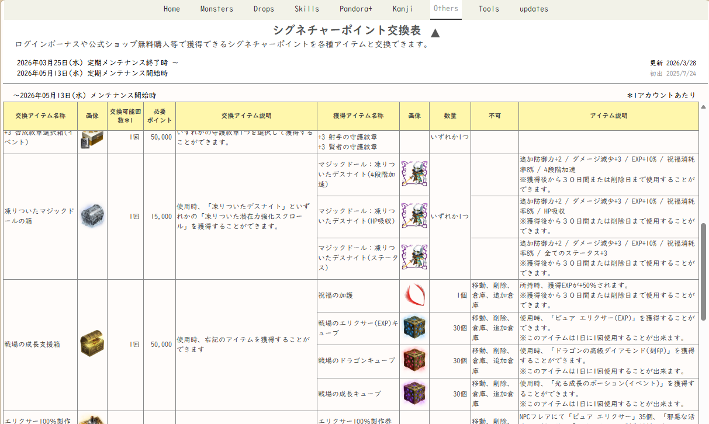
- マジックドールは3種になりました。
- カルバ トロフェウム、カルバ トロフィーは無くなりました。
-
更新 2026年03月28日
Skills：スキル一覧表Update対応▼
2026/03/25「/布告」アップデート関連■戦闘バランス
・クラス別状態異常スキルのバランスを調整
- 君主
エンパイア、コンカラー - ナイト
ショックアタック、フォーススタン、フォーススタン：アルティメット - エルフ
ソウルシェクルズ - ダークエルフ
シャドウ ステップ、シャドウ ステップ：チェイサー - イリュージョニスト
ボーン ブレイク、ボーン ブレイク：ラスト、オシリス - ウォリアー
デスペラード、デスペラード：アブソルート、グロテスク、テンペスト - フェンサー
ファントム、ファントム：リーパー、ファントム：デス、パンテラ、パンテラ：レクイエム、パンテラ：ショック - ランサー
クルーエル、クルーエル：コンビクション、クルーエル：デスペナルティ、プレッシャー、プレッシャー：デスリコール - パラディン
フレア、フレア：アドベント、アーケインフラッシュ、アーケインフラッシュ：サルベーション、セイクリッドマーク、セイクリッドマーク：インクィジター、セイクリッドマーク：アポカリプス - ファイター
レコニング、レコニング：ナイトメア、ラッシュ、ラッシュ：スタック、ラッシュ：ピアス、アウトバースト
■クラスリバランシング
・スキル追加
- 君主
マジェスティ：ドミニオン(希少スキル) - ナイト
ソリッドキャリッジ：ベテラン(高級スキル)、レイジングウェポン：イージス(希少スキル) - エルフ
エルヴンガード(希少スキル) - ダークエルフ
エクリプス(高級スキル)、バニッシュ(希少スキル) - ドラゴンナイト
ソリッド ノット：サベージ(希少スキル) - イリュージョニスト
ベール オブ ミラージュ(希少スキル) - ファイター
ライド アウト(希少スキル) - フェンサー
レイジ：バースト(高級スキル)、サバイブ：ライフ(希少スキル) - パラディン
ホーリー シールド：オーセンティック(希少スキル) - ウォリアー
スレイヤー：フレンジー(希少スキル)
・スキル変更
- 君主
オーソリティ、シャイニングアーマー - ナイト
クルセイダー、レイジングウェポン - エルフ
バーニングショット、イーグルアイ、サイクロン、ソウル オブ フレイム、インフェルノ、その他：魔法ウィンドウ内で、エルフ精霊魔法の位置を段階別に調整 - ウィザード
エーテリアルサークル、フリージングアーマー、エーテリアル マスター、ターン アンデッド、ヴァンパイアリックタッチ、チルタッチ、ディバイン プロテクション - ダークエルフ
アーマーブレイク、アンキャニードッジ、ダブルブレイク / シャドウファング、バーニング スピリッツ、シャドウ ステップ：チェイサー - ドラゴンナイト
フォー スレイヤー：レヴィアタン、アウラキア、覚醒：アンタラス、覚醒：パプリオン、覚醒：ヴァラカス、覚醒：リンドビオル、ベヒモス - イリュージョニスト
イリュージョン：ホライズン、ペイシェンス、その他：距離別NPCの基本攻撃および武器発動魔法ダメージ減少 - ウォリアー
タイタン：ブリッツ、タイタン：マジック、タイタン：ライジング、タイタン：ロック - フェンサー
レイジ - ランサー
インクリーズ レンジ、プレッシャー、ヴェンジェンス - パラディン
ホーリー チャージ、フレア：アドベント、アーケインバースト - ファイター
ファイティングスピリット：インデュア、インプリシット ヒット：エクストーション、レコニング、ラッシュ系
アップデート対象スキルについてMonstersならびにDropsの変更はありません■db設定
クラス順（君騎妖魔闇竜幻戦剣槍聖闘）、等級降順、スキル名称昇順で並び替えました。db更新に伴ってスキルモーダル表示（勇猛のメダル交換対象スキル）も更新されています。 - 君主
-
更新 2026年03月18日
Others：勇猛のメダル交換表2026年03月期更新▼
2026年3月18日(水)定期メンテナンス後～2026年6月17日(水)定期メンテナンス前開催。
交換アイテムラインナップとレートは前回2025年12月期と同じ。
-
更新 2026年03月07日
Pandora+：数値訂正/列のページ変更▼
1未満の数値を修正
1未満0以上の小数値が0と表示されていたものを％表示に訂正しました。
空欄の一部が0と表示されていたものを空欄に訂正しました。 ＋符号が付いていなかった％値に＋符号を付与しました。
紋章/インシグニア/イアリング/ペンダント複数ページで列数の差がなくなるよう編集
ルームティスの賢者のペンダント3列をペンダント1からペンダント2へページを移動しました。 -
更新 2026年03月05日
サイト：ページ構成変更▼
折り畳み表示を変更しました
画面幅が800px以上の時はメニュー帯を表示せずリンクナビをそのまま表示するようにしました。
リンクナビとcopyrightをページ内側に展開するように変更しました。
リンクナビの項目間隔、高級以上スキル検索表のスキルリンク化、フォント変更その他体裁を修正しました。
-
更新 2026年03月05日
Monsters/Drops/Others：スキル名修正▼
「FIGHTING SPIRIT」2025.12.17updateによる変更
Monsters
フェンサーの書(ファントム：レクイエム)→フェンサーの書(パンテラ：レクイエム)
蘇生も同じ
※ウォリアーの印章(グロテスク)はスキル選択箱のみDropなので該当無しDrops
フェンサーの書(ファントム：レクイエム)→フェンサーの書(パンテラ：レクイエム)
蘇生も同じ
※ウォリアーの印章(グロテスク)はスキル選択箱のみDropなので該当無し高級以上スキル一覧
ウォリアーの印章(タイタン ビースト)→ウォリアーの印章(グロテスク)
フェンサーの書(ファントム：レクイエム)→フェンサーの書(パンテラ：レクイエム)
-
更新 2026年02月20日
Others：キングアマンの倉庫大放出2026年2月期新規掲載▼
2026年02月19日(木) 定期メンテナンス終了時 ～ 2026年03月04日(水) 定期メンテナンス開始時まで開催。
交換アイテム(製作可能数：全ワールド合計またはアカウントあたり回数制限あり)
●アンシャルの英雄魔法研磨書(刻印)・確率製作(5,000,000アデナ)
●アンシャルの伝説魔法研磨書(刻印)・確率製作(10,000,000アデナ)
●ハルパス キー・確率製作(50,000,000アデナ)
●魔神の証・確率製作(10,000,000アデナ)
ほか -
更新 2026年02月05日
Others：勇猛のメダル交換表2025年12月期更新▼
2025年12月24日(水)定期メンテナンス後～2026年3月18日(水)定期メンテナンス前開催。イベント告知の内容差し替え。
交換アイテムに以下の4アイテムが追加されました。今回「潜在力強化の秘薬(100枚)」はありません。
他は2025年2月期以来ラインナップとレートは同じ。
●アンシャルの英雄魔法研磨書(刻印)(2,700枚)
●アンシャルの伝説魔法研磨書(刻印)(6,200枚)
●ハルパス キー箱[製作条件アリ・確率製作1％](300枚)
●魔神の証[確率製作5％](500枚) -
更新 2026年02月01日
サイト：ページ構成変更▼
ページのナビゲーションを変更しました。
大字/押下釦のリンクを廃止し、Toolsリンクにまとめました。
諸表のアクセサリー強化性能表をAccessorysリンクに移動しました。またホームページの諸表の項目からテーブルのリンクを除きました。

-
更新 2026年01月31日
Others：アクセサリー強化性能表訂正▼
紋章ほか各アクセサリーページ：表頭「エンチャント」→「強化数」に統一。
-
更新 2026年01月31日
Monsters：tsv読込み廃止▼
マスターエクセルのデータを直接記述に戻しました。
[表示]ボタンを廃止
初期からテーブルを表示します。tsvフェッチは廃止しました。併せてCSSとJSを修正。sort_down&up/filterボタンのsvgを作成。
-
更新 2026年01月28日
Skills：効果・性能▼
2026-01-28 Update反映。
効果・性能：語句修正
「回避/反撃」→「反撃スキルの回避」
-
更新 2026年01月19日
Kanji：記事追加▼
登録状況登録数と内訳を追記
- 登録数
- 品詞別内訳
- コメント別内訳
-
更新 2026年01月18日
Kanji：辞書を更新▼
コメントの訂正「魔法」→「スキル」
- でぃばいんそうる/聖書(ディバイン ソウル)(刻印)
- とりぷるあろー/精霊の水晶(トリプル アロー)(刻印)
- ふぁんとむ/フェンサーの書(ファントム)(刻印)
- ふぉーすれいやー/ドラゴンナイトの書板(フォー スレイヤー)(刻印)
-
更新 2026年01月15日
漢字辞書(Kanji)：新設▼
ATOK/IME別のページを統合ATOK/IME辞書更新
変更：ボス名の末尾から「 ボス(★)」を除去。コメントのスキル、アイテム、モンスター名から場所を除去。スキルアイテム名読みでの登録を削除。
旧版に追加：2024.11.20「騎士道」、2025.03.19「UNLIMITアップデート」、2025.07.23「GLORY」、2025.12.17「FIGHTING SPIRITS」までのスキルとアイテム他
ページ統合に伴ってリンクを変更(IME、ATOKを削除。kanjiを追加)
-
更新 2026年01月10日
Monsters/Drops/Skills：Update対応▼
2025/12/17「FIGHTING SPIRITS」モンスター一覧表/ドロップ一覧表
ドロップアイテム(スキル戦闘日誌・装備フィスト)の追加- 悪魔王のフィスト、戦場のフィスト、ブラッド フィスト、守護者のフィスト、守護者のフィスト(蘇生)
- 戦闘日誌(インプリシット ヒット)(蘇生)、戦闘日誌(インプリシット ヒット)、戦闘日誌(オーバーカム)(蘇生)、戦闘日誌(オーバーカム)、戦闘日誌(クラスト)(蘇生)、戦闘日誌(クラスト)、戦闘日誌(モータル フィスト)(蘇生)、戦闘日誌(モータル フィスト)、戦闘日誌(オーバーカム：ウィル)(蘇生)、戦闘日誌(オーバーカム：ウィル)、戦闘日誌(ファイティング スピリット：インデュア)(蘇生)、戦闘日誌(ファイティング スピリット：インデュア)、戦闘日誌(インプリシット ヒット：エクストーション)(蘇生)、戦闘日誌(インプリシット ヒット：エクストーション)、戦闘日誌(ファイティング スピリット：スマッシュ)(蘇生)、戦闘日誌(ファイティング スピリット：スマッシュ)、戦闘日誌(ラッシュ：スタック)(蘇生)、戦闘日誌(ラッシュ：スタック)、戦闘日誌(コンパルション：リミット)(蘇生)、戦闘日誌(コンパルション：リミット)、戦闘日誌(レコニング：ナイトメア)(蘇生)、戦闘日誌(レコニング：ナイトメア)、戦闘日誌(ラッシュ：ピアス)(蘇生)、戦闘日誌(ラッシュ：ピアス)、戦闘日誌(アウトバースト)(蘇生)、戦闘日誌(アウトバースト)
スキル一覧表
スキルの追加
闘士
レコニング、コンパルション、ラッシュ、アウトバースト、ファイティング スピリット、モータル フィスト、クラスト、インプリシット ヒット、オーバーカム、ファイティング スピリット：インデュア、オーバーカム：ウィル、インプリシット ヒット：エクストーション、ラッシュ：スタック、ファイティング スピリット：スマッシュ、コンパルション：リミット、レコニング：ナイトメア、ラッシュ：ピアスクラスリバランス関連スキル追加と変更
アーマーブレイク：アビス(闇),メイルストロム：レヴェナント(槍),フォー スレイヤー：レビアタン(竜),エーテリアル マスター(魔),イリュージョン：ホライズン(幻),オーソリティ(君),セイクリッドマーク：インクイジター(聖),クルセイダー(騎),エスパーダ(剣),マジック シールド：リバティ(妖),タイタン：コロッサス(戦) -
更新 2025年12月21日
Others：シグネチャーポイント交換表(テーブル)▼
シグネチャーポイント交換表【2025-12月期】を掲載しました。
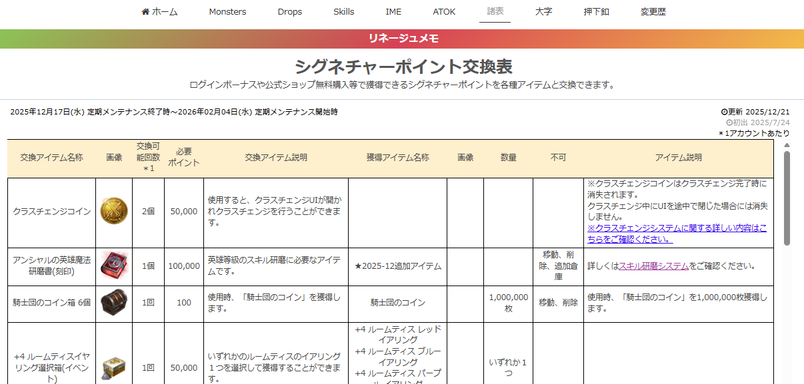
-
更新 2025年12月21日
Others：アクセサリー強化性能表訂正▼
単独アイテムの確認用モーダル表示
先行インシグニア以外のアクセサリーをモーダル表示対応。併せてPop-up用TableRecordDataを外部共通ファイル化。
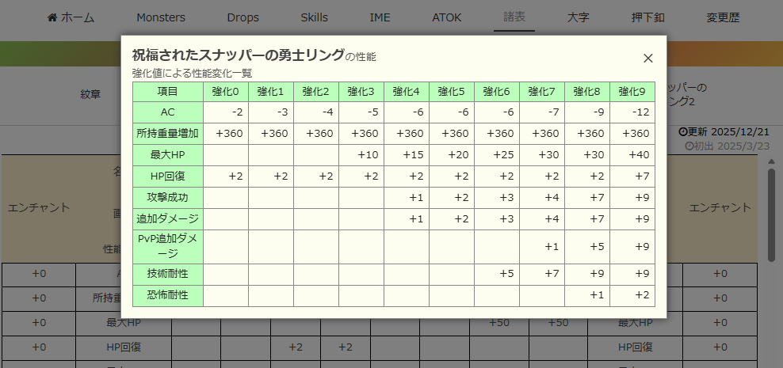
-
更新 2025年11月11日
Monsters/Drops/Skills：入力誤り訂正▼
入力内容半角スペース漏れの訂正モンスター一覧表
精鋭ブラックナイト → 精鋭 ブラックナイト
フローティング アイ肉 → フローティング アイ 肉ドロップ一覧表
Dropモンスター名訂正：精鋭ブラックナイト → 精鋭 ブラックナイト
アイテム項目削除：フローティング アイ肉スキル一覧表
Dropモンスター名訂正：精鋭ブラックナイト → 精鋭 ブラックナイト
-
更新 2025年10月30日
Others：高級以上のスキル検索表▼
スキル選択箱のみか直接個別にドロップもあるかの確認表。
高級以上スキル一覧
一部：例
等級 クラス スキルアイテム名 直Drop 直Drop蘇生 1.唯一 02.騎 技術書(フォース スタン：アルティメット) 無し 無し 1.唯一 08.戦 ウォリアーの印章(テンペスト) 無し 無し 1.唯一 09.剣 フェンサーの書(ファントム：デス) 無し 無し 1.唯一 10.槍 槍術書(プレッシャー：デス リコール) 無し 無し 1.唯一 11.聖 聖書(セイクリッド マーク：アポカリプス) 無し 無し 2.神話 01.君 魔法書(コンカラー) 無し 無し 2.神話 03.魔 魔法書(ディスインテグレート：ネメシス) 無し 無し -
更新 2025年10月30日
Skills：スキル選択箱を展開▼
スキル選択箱以外の従来ドロップとスキル選択箱を展開したDropモンスターを収録
- スキル選択箱には該当する等級の全てのスキルがえられるものとして塔11階層のボスなどを全て網羅してDropモンスターとして収録した。蘇生スキル選択箱も該当する等級の全ての蘇生スキルがえられるものとして同様に収録した。
- また高級以上のスキルを狩り場図鑑で検索して、個別にドロップするモンスターを加えた。
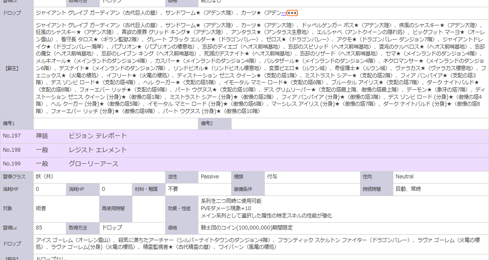
-
更新 2025年10月28日
Drops：狩り場図鑑見直し▼
2024.11.20「騎士道」、2025.03.19「UNLIMIT」、2025.07.23「GLORY」アップデートなどの反映。
Drops(Item2Monsterリスト)
シーレンの神殿、シーレンの神殿地下、ヘオス前哨基地、アントクイーンの隠れ処など、追加・変更修正モンスターに対応。
各種スキル選択箱、亡者の記憶類、ドラゴンの下級箱・上級箱(封印)、古代魔神の装備、古代巨石の装備、忘れられた島の古書の欠片、忘れられた島テレポート スクロール、精霊の水晶(グローリー アース)の変更などの追加。
エルシャベの伝説の武器箱、エルシャベの伝説スキルブック箱、エルシャベの英雄スキルブック箱、エルシャベの蘇生英雄スキルブック箱、審判者のグレートソード、精霊の水晶(グローリー アース)(蘇生)、クロノスの恐怖、ガイアの激怒、支配者の処刑、死神のソード、ヒュペリオンの絶望、アインハザードの閃光、グランカインの審判、テイアの混沌、エヴァの誓約、ホーリー へドロン スタッフなどの削除。 -
更新 2025年10月28日
Monsters：狩り場図鑑見直し▼
2024.11.20「騎士道」、2025.03.19「UNLIMIT」、2025.07.23「GLORY」アップデートなどの反映。追加モンスター:40▼
アデン大陸
グリッド キング ボス(★), 貪欲の原罪 グリッド キング ボス(★)アントクイーンの隠れ処
エルシャベシーレンの神殿
シーレンの武官, シーレンの巫女, シーレンの司祭, シーレンの騎士, シーレンの兵士シーレンの神殿地下
真紅の狙撃手, 真紅の巫女, 真紅の司祭, 真紅の騎士, シーレンの兵士, 真紅の神官ヘオス前哨基地
忘却の演奏者, 魂のネクロマンサー, 忘却のディエゴ, 忘却のスピリッド, タランチュラ, イビル フェンサー, スケルトン アックスマン, 忘却のアリオク, 混沌のケルベロス ボス(★), レイブン ランサー, 忘却の魔女, 腐敗の司祭, 闇のネクロマンサー, 忘却のレイブン キング, 死滅のデスナイト ボス(★), スケルトン マークスマン, サーベル タイガー, 忘却のリザード, サラマンダー, スケルトン パイクマン, レイブン メイジ, イビル ブレイズ, レイブン アーチャー, ペルティア ガルーダ, マンドラゴラ, イビル クラッシャー変更修正モンスター:242▼
アデン大陸
サンドワーム ボス(★)(アイテム), オルクス ボス(★)(アイテム), カーツ ボス(★)(アイテム), リカント ボス(★)(アイテム), ドッペルゲンガー ボス ボス(★)(アイテム), バンディット ボス ボス(★)(アイテム), 疾風のシャスキー ボス(★)(アイテム), 狂風のシャスキー ボス(★)(アイテム)アンタラス生息地
アンタラス ボス(★)(アイテム)アントクイーンの隠れ処
エルシャベ(ステータス/アイテム), クイーン センチュリオン(アイテム)エルフの森のダンジョン3階
地の精霊のガーディアン(アイテム)エルモア激戦地
エルモア ウィザード(アイテム), エルモア ウィザード(アイテム)エヴァ王国
潜んでいるカープ(アイテム)エヴァ王国水路1階
ジャイアント ラット(アイテム)エヴァ王国水路2階
ニュートリア(アイテム)エヴァ王国水路3階
リザード ウィザード(アイテム), リザード ウォリアー(アイテム)オークの集落
フォノス オーク ソードマン(アイテム)オーレン雪山
アイス ゴーレム(アイテム), ビッグフット マーヨ ボス(★)(アイテム)ギラン監獄2階
看守長 タロス ボス(★)(アイテム)シルバーナイトタウンのダンジョン4階
殺気に満ちたアーチャー(アイテム), エルジェン ボス(★)(アイテム)ドラゴンバレー
グレート ブラック エルダー ボス(★)(アイテム), ゼロス ボス(★)(アイテム), フランティック スケルトン マークスマン(アイテム), クールヘッド スケルトン マークスマン(アイテム), フランティック スケルトン ファイター(アイテム), ジャイアント コカトリス(アイテム)ドラゴンバレー ダンジョン4階
地竜のサキュバス(アイテム)ドラゴンバレー ダンジョン5階
地竜のサキュバス(アイテム)ドラゴンバレー ダンジョン6階
地竜のエリート ソルジャー(アイテム), 地竜のサキュバス(アイテム), 地竜のサキュバス クイーン(アイテム)ドラゴンバレー ダンジョン7階
アクモ ボス(★)(アイテム)ドラゴンバレー海岸
ジャイアントドレイク ボス(★)(アイテム), ドレイク(アイテム), 渓谷のオーガ(アイテム)ハイネの森
ジュラカ(アイテム)パプリオンの棲息地
パプリオン ボス(★)(アイテム)ブラック バトルシップ2階
ブラックナイト近衛兵(アイテム)ブラック バトルシップ3階
ブラックナイト ガーディアン(アイテム)メインランドのダンジョン4階
セマ ボス(★)(アイテム), メルキオール ボス(★)(アイテム), カスパー ボス(★)(アイテム), バルタザール ボス(★)(アイテム)メインランドのダンジョン6階
ネクロマンサー ボス(★)(アイテム)メインランドのダンジョン7階
デスナイト ボス(★)(アイテム), デスナイト ボス(★)(アイテム), デスナイト ボス(★)(アイテム)ユニコーンテンプル
風の大精霊(アイテム), 地の大精霊(アイテム), 夢幻のベネボス(アイテム)ユニコーンテンプルBOOST
風の大精霊(アイテム), 地の大精霊(アイテム)リンドビオル棲息地
リンドビオル ボス(★)(アイテム)ルウン城
剣鬼 ボス(★)(ステータス/アイテム), ルウン3世 ボス(★)(アイテム), 変面ピエロ ボス(★)(ステータス/アイテム), 偵察団長 ボス(★)(アイテム), 監視者のルウン人形(アイテム), 幹部のルウン人形(アイテム), 奇怪博士 ボス(★)(アイテム)ヴァラカス棲息地
ヴァラカス ボス(★)(アイテム)暗黒竜のダンジョン1階
ダーク ドッペルゲンガー(アイテム)暗黒竜のダンジョン2階
ダーク ドッペルゲンガー(アイテム), 憤怒のバルログ ボス(★)(アイテム)暗黒竜の傷跡
ヘルクリーチャー(アイテム), ダークロード ボス(★)(アイテム)隠されたエヴァ王国水路
リザード ウォリアー(アイテム), リザード ウィザード(アイテム)隠されたエヴァ王国水路Boost
リザード ウィザード(アイテム), リザード ウォリアー(アイテム)隠された見棄てられた者たちの地Boost
見棄てられたソルジャー(アイテム), 見棄てられたダークウィザード(アイテム)火竜の棲処
ラヴァ ゴーレム(アイテム), バーニング ウォリアー(アイテム), フェニックス ボス(★)(アイテム), イフリート ボス(★)(アイテム), ラヴァ ゴーレム(分身)(アイテム), 火竜のガーディアン(アイテム)乾いた砂漠
スコーピオン(アイテム), サンド スコーピオン(ステータス)古代巨人の墓
ジャイアント グレイブ ガーディアン(アイテム)古代神の寺院
歪みのアーチャー(アイテム), 歪みのデーモン(アイテム), 歪みのウギル(アイテム), 歪みの支配者(アイテム), 歪みのウォーウルフ(アイテム), 歪みの監視者(アイテム), 歪みのクルータ(アイテム), 歪みの捕食者(アイテム)古代精霊の墓
風の精霊(アイテム), 精霊監視者 ボス(★)(アイテム), 水の精霊(アイテム), マンボ キング ボス(★)(アイテム)極寒の神殿
アイスクイーン ボス(★)(アイテム), アイス デーモン ボス(★)(アイテム)極寒の神殿(HARD)
アイス デーモン ボス(★)(アイテム), アイスクイーン ボス(★)(アイテム), アイス マンボ ラビット ボス(★)(アイテム)支配の塔1階
ディストーション ゼニス クイーン ボス(★)(ステータス/アイテム)支配の塔2階
ミストラスト シアー ボス(★)(ステータス/アイテム)支配の塔3階
ホラー イフリート(アイテム), フィア バンパイア ボス(★)(ステータス/アイテム)支配の塔4階
デス ゾンビ ロード ボス(★)(ステータス/アイテム), デス ゴースト(アイテム), デス クリーチャー(アイテム)支配の塔5階
ヘル フォフス(ステータス), ヘル スプレッド(ステータス), ヘル クーガー ボス(★)(ステータス/アイテム), ヘル ボーンドラゴン(アイテム), ヘル ドーベルマン(アイテム)支配の塔6階
イモータル マミー ロード ボス(★)(ステータス/アイテム), イモータル ニ バス(ステータス), イモータル カルビス(ステータス), イモータル サンド ソルジャー(アイテム), イモータル サンド ウィザード(アイテム)支配の塔7階
ブルータル メイド(ステータス), ブルータル アイリス ボス(★)(ステータス/アイテム), ブルータル アイスマン(ステータス)支配の塔8階
ダーク アーマー ナイト(ステータス), ダーク ナイトバルド ボス(★)(ステータス/アイテム), ダーク ミノタウロス(ステータス)支配の塔9階
不滅の信徒(ステータス), フォーエバー リッチ ボス(★)(ステータス/アイテム), 不滅の司祭(ステータス/アイテム)支配の塔10階
パート ウグヌス ボス(★)(ステータス/アイテム), パート デビルマン(ステータス), パート レッサーデーモン(ステータス), パート アスモデウス(ステータス), パート サキュバス クイーン(アイテム), パート クリムゾン(ステータス)支配の塔最上階
デス グリムリーパー ボス(★)(ステータス/アイテム), ゾンビ ロード(アイテム), リッチ(アイテム), ウグヌス(アイテム), ナイトバルド(アイテム), ゼニス クイーン(アイテム), シアー(アイテム), バンパイア(アイテム), マミー ロード(アイテム), クーガー(アイテム), アイリス(アイテム)死の廃墟
バグベアー(アイテム)象牙の塔4階
ダンシング ソード(アイテム)象牙の塔5階
隠された ハーディンの分身 ボス(★)(アイテム)象牙の塔6階
隠された ハーディンの分身 ボス(★)(アイテム), デーモン ゴーレム(アイテム), デーモンの司祭(アイテム)象牙の塔7階
隠された ハーディンの分身 ボス(★)(アイテム), デーモン ボス(★)(アイテム), デーモンの司祭(アイテム)風竜の棲処
ワイバーン(アイテム), マイノ シャーマン ボス(★)(アイテム), 風竜のセターレン (アイテム)忘れられた島
ミノタウロス(アイテム), ミノタウロス(アイテム), ブルート(アイテム), ハーピー(アイテム), ラミア(アイテム), ラミア(アイテム), ウェアウルフ(アイテム), ライカンスロープ(アイテム), ライカンスロープ(アイテム), キング バグベアー(アイテム), ガースト(アイテム), ガースト ロード(アイテム), バグベアー(アイテム), サイクロプス(ステータス/アイテム), グリフォン(アイテム), コカトリス(アイテム), グレート ミノタウロス ボス(★)(アイテム), キング バグベアー(アイテム), バシリスク(アイテム), ドレッドスパイダー(アイテム), ガースト ロード(アイテム), ラミア(アイテム), サイクロプス(アイテム), ラミア(ステータス/アイテム), ドッペルゲンガー(アイテム), キング バグベアー(アイテム), ミノタウロス(アイテム), ジャイアント クロコダイル(アイテム), ダークエルフ(アイテム), ドレイク(アイテム), バグベアー(アイテム), ウェアウルフ(アイテム), ライカンスロープ(アイテム), ガースト(アイテム), ミノタウロス(アイテム), アリゲーター(アイテム), ブルート(アイテム)話せる島ダンジョン2階
ドレッドスパイダー(アイテム), 腐食したスケルトン ガード(アイテム)話せる島フィールド
オーク(アイテム), ジャイアント スパイダー(アイテム), ブラックナイト(アイテム)傲慢の塔1階
ディストーション ゼニス クイーン (分身) ボス(★)(アイテム), リベリオン ジルレタ(アイテム), ディストーション ドレッドスパイダー(アイテム)傲慢の塔2階
ミストラスト シアー (分身) ボス(★)(アイテム), リベリオン ブルート(アイテム)傲慢の塔3階
フィア バンパイア (分身) ボス(★)(アイテム), リベリオン インキュバス(アイテム)傲慢の塔4階
デス ゾンビ ロード (分身) ボス(★)(アイテム), リベリオン ウォーカー(アイテム)傲慢の塔5階
ヘル クーガー (分身) ボス(★)(アイテム), ヘル ドーベルマン(アイテム), ヘル ボーンドラゴン(アイテム), リベリオン スプレッド(ステータス/アイテム)傲慢の塔6階
イモータル マミー ロード (分身) ボス(★)(アイテム), リベリオン カルビス(ステータス/アイテム)傲慢の塔7階
マーシレス アイリス (分身) ボス(★)(アイテム), ブルータル バーニング アーチャー(アイテム), リベリオン アイスマン(ステータス/アイテム)傲慢の塔8階
ダーク ナイトバルド (分身) ボス(★)(アイテム), リベリオン アーマー ナイト(ステータス/アイテム)傲慢の塔9階
フォーエバー リッチ (分身) ボス(★)(アイテム), リベリオン プリースト(ステータス/アイテム)傲慢の塔10階
パート ウグヌス (分身) ボス(★)(アイテム), パート アスモデウス(ステータス), パート クリムゾン(ステータス), リベリオン レッサー デーモン(ステータス/アイテム)傲慢の塔最上階
デス グリムリーパー ボス(★)(アイテム), 死神のサキュバス(ステータス/アイテム), 死神のゴースト(アイテム), 死神の監視者(アイテム), 死神のイフリート(アイテム), 監視者ゼニス クイーン(アイテム), 監視者シアー(アイテム), 監視者アイリス(アイテム), 監視者ウグヌス(ステータス/アイテム), 監視者ゾンビ ロード(アイテム), 監視者リッチ(ステータス/アイテム), 監視者クーガー(アイテム), 監視者ナイトバルド(アイテム)傲慢の塔地下神殿
神殿のプリースト(ステータス), 神殿のハイプリースト(ステータス), カヘル ヤヒ ボス(★)(アイテム) -
更新 2025年09月26日
Others：アクセサリー強化性能表(インシグニア表)訂正▼
賢者の守護インシグニア：訂正
強化＋５～＋８近距離命中漏れのため追加単独アイテムの確認用モーダル表示
インシグニアで先行試験にモーダル表示
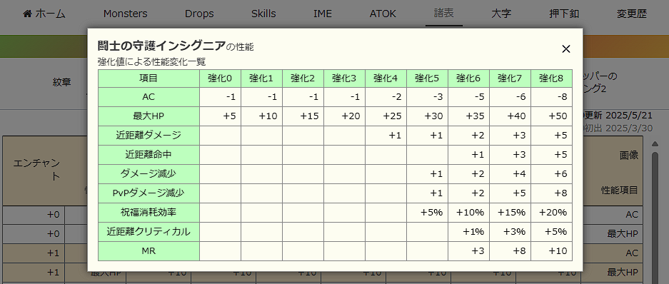
-
更新 2025年09月18日
Others：勇猛のメダル交換スキル入手性表新規掲載▼
勇猛のメダル交換スキルのdropと購入可不可を追記した表
8ページのpdfと各ページのpng画像を掲載
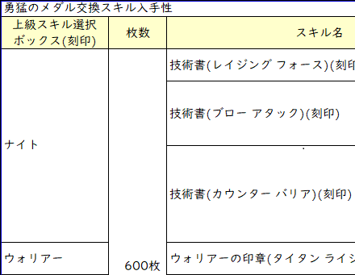
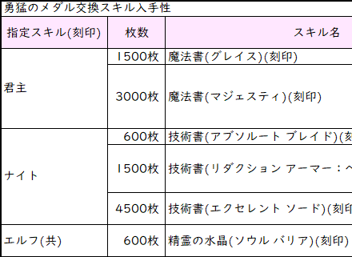
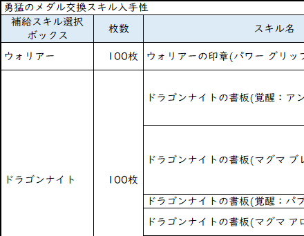
-
更新 2025年09月24日
Skills：ページ体裁など修整▼
ボタンの集約、長いテキストの折畳み。
skill(スキル一覧表)
- [all]ボタンを廃止[表示/リセット]に一本化。
- ラジオボタンに説明文を追加。ウィザード以外の一般魔法
- 長いテキストは折りたたんで折りたたみ表示を追加。
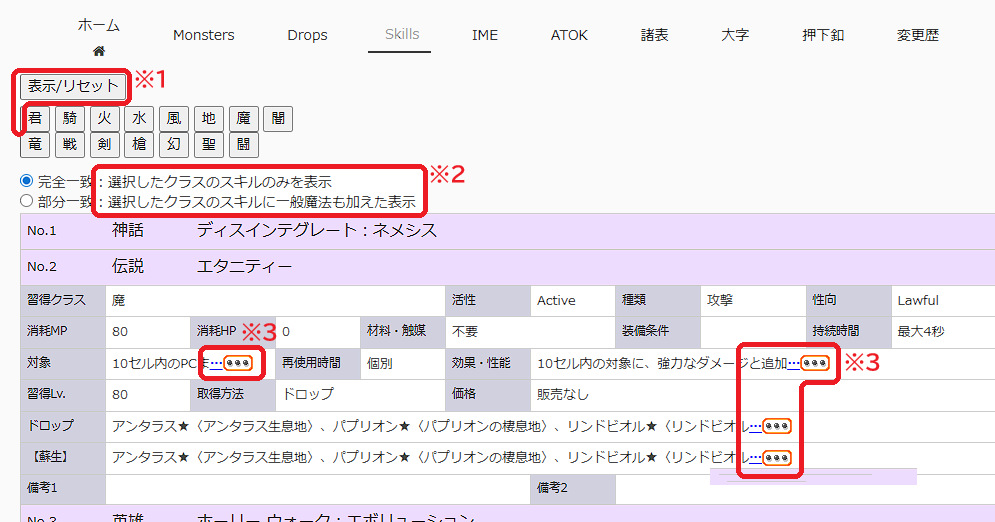
-
更新 2025年09月17日
Others：勇猛のメダル交換表2025年9月期更新▼
2025年9月17日(水)定期メンテナンス後～2025年12月24日(水)定期メンテナンス前開催。イベント告知の内容差し替え。
交換アイテムに以下のスキルが復活されました。2025年2月期以来ラインナップとレートは同じ。
魔法書(グレイス)(刻印)(1500枚)、魔法書(マジェスティ)(刻印)(3000枚)、技術書(アブソルート ブレイド)(刻印)(600枚)、技術書(リダクション アーマー：ベテラン)(刻印)(1500枚)、技術書(エクセレント ソード)(刻印)(4500枚)、精霊の水晶(ソウル バリア)(刻印)(600枚)、精霊の水晶(マジック シールド)(刻印)(1500枚)、魔法書(デス ヒール)(刻印)(1500枚)、魔法書(メテオ ストライク)(刻印)(4500枚)、闇精霊の水晶(ダブル ブレイク：デスティニー)(刻印)(1500枚)、闇精霊の水晶(アーマー ブレイク)(刻印)(4500枚)、ドラゴンナイトの書板(アウラキア)(刻印)(1500枚)、ドラゴンナイトの書板(ランページ)(刻印)(4500枚)、記憶の水晶(メビウス)(刻印)(1500枚)、記憶の水晶(インパクト)(刻印)(4500枚)、ウォリアーの印章(タイタン ロック)(刻印)(1500枚)、ウォリアーの印章(タイタン ブリッツ)(刻印)(3000枚)、フェンサーの書(サヴァイヴ)(刻印)(1500枚)、フェンサーの書(インフィニティ：ブリッツ)(刻印)(1500枚)、フェンサーの書(パラドックス)(刻印)(4500枚)、槍術書(プレッシャー)(刻印)(1500枚)、槍術書(ヴァンガード)(刻印)(4500枚)、槍術書(ドッジ ブレイク)(刻印)(3000枚)、聖書(ディバイン ソウル：グレイス)(刻印)(1500枚)、聖書(ホーリー チャージ)(刻印)(4500枚)
-
更新 2025年09月11日
Others：アクセサリー強化性能表(テーブル)新規掲載▼
紋章/インシグニア/ルームティスのイアリング・ペンダント/ブレスレット/スナッパーのリングhtml表掲載。
-
更新 2025年09月07日
Others：勇猛のメダル交換表(テーブル)にモーダル表示▼
勇猛のメダル交換表の記事中、交換スキル名を語句自動リンクにしてスキル一覧情報をモーダル表示するようにしました。
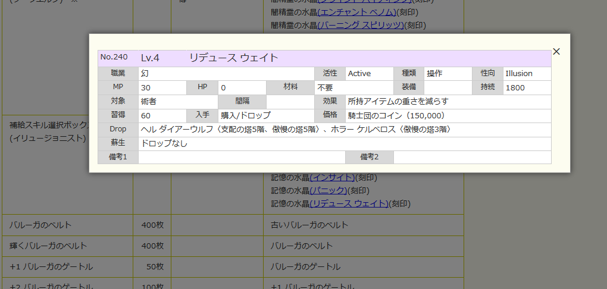
-
更新 2025年09月03日
Others：シグネチャーポイント交換表(テーブル)新規掲載▼
シグネチャーポイント交換表【2025-7月期】を掲載しました。
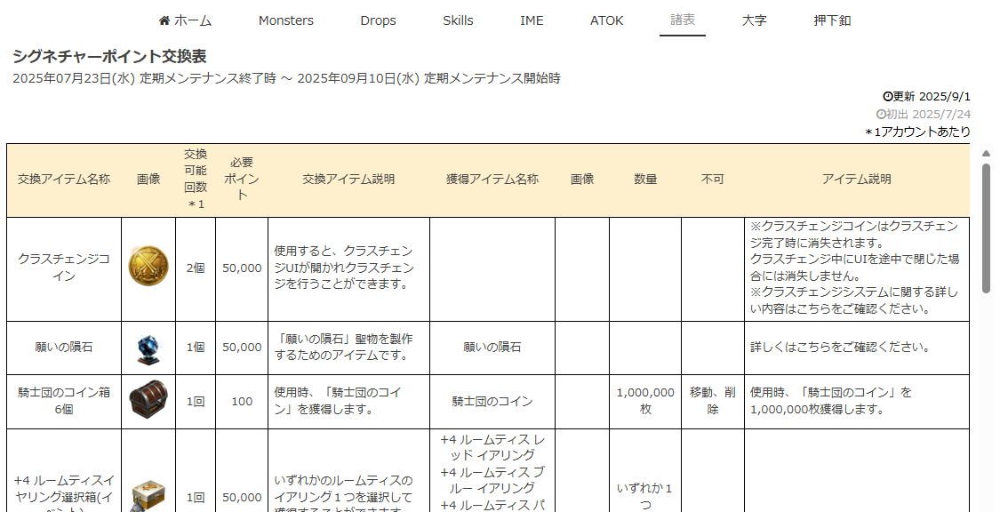
-
更新 2025年09月02日
Others：シグネチャーポイント獲得コンテンツ・交換表・アクセサリー性能表新規掲載▼
諸表のページに以下の表を掲載しました。
- シグネチャーポイント獲得コンテンツ(画像)
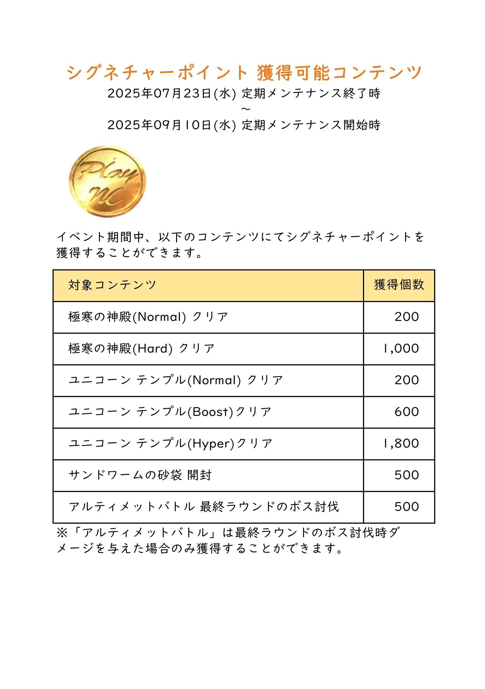
- アクセサリーの強化数別性能表
- 紋章(テーブル/画像)
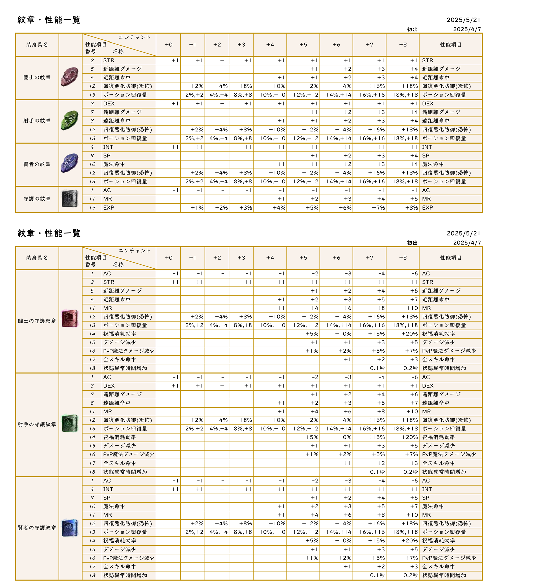
- インシグニア(画像)
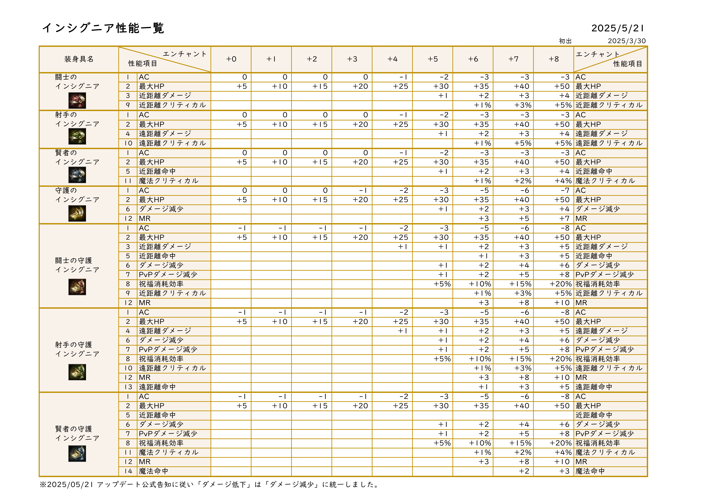
- ルームティスイアリング(画像)
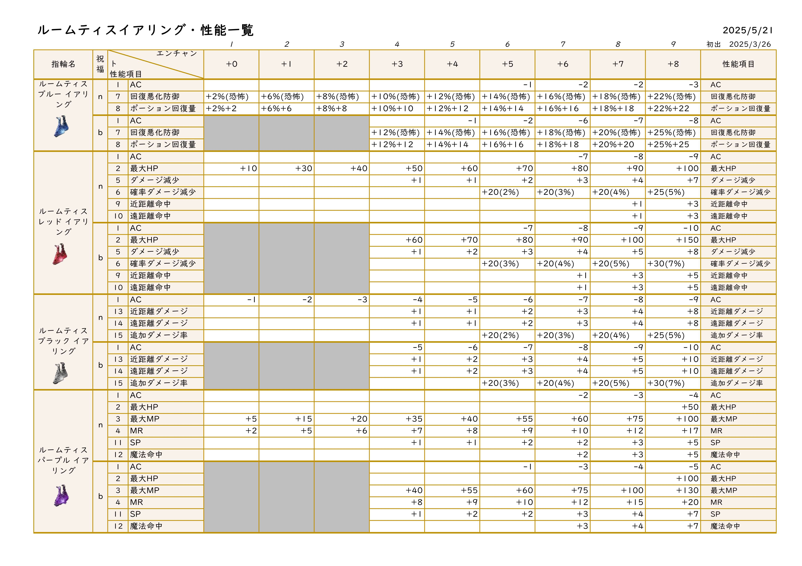
- ブレスレット(画像)
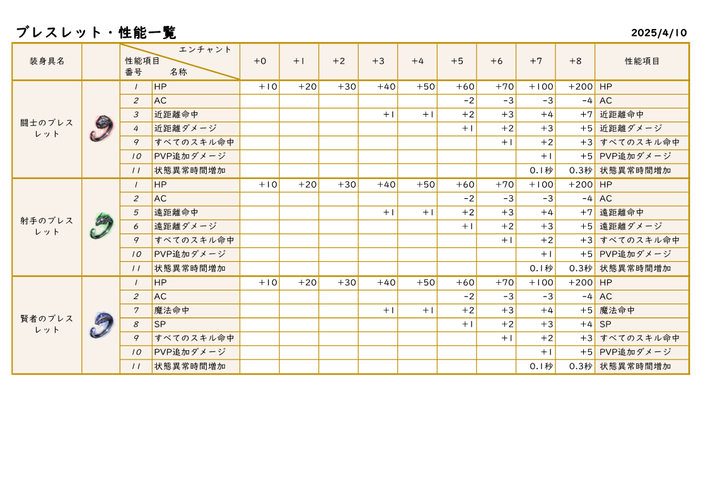
- ルームティスのペンダント(画像)
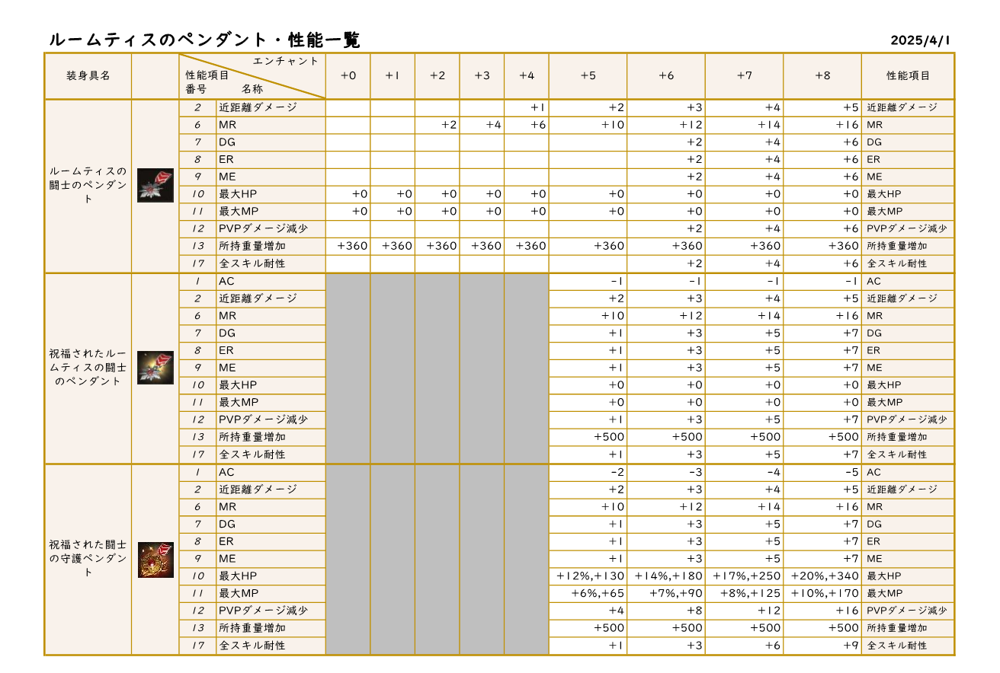
- スナッパーのリング(画像)
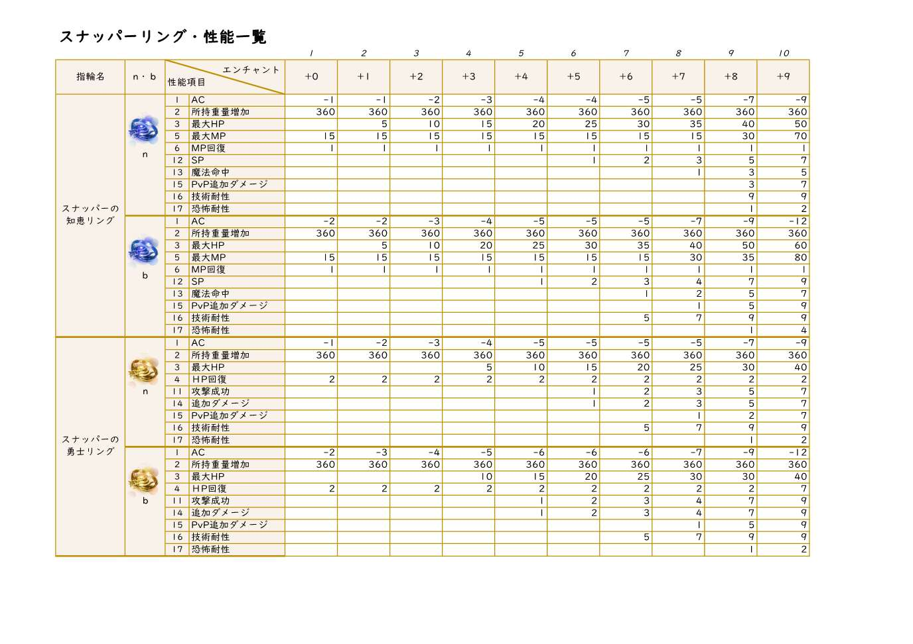
- 紋章(テーブル/画像)
- シグネチャーポイント交換表【2025-7月期】(テーブル/画像)
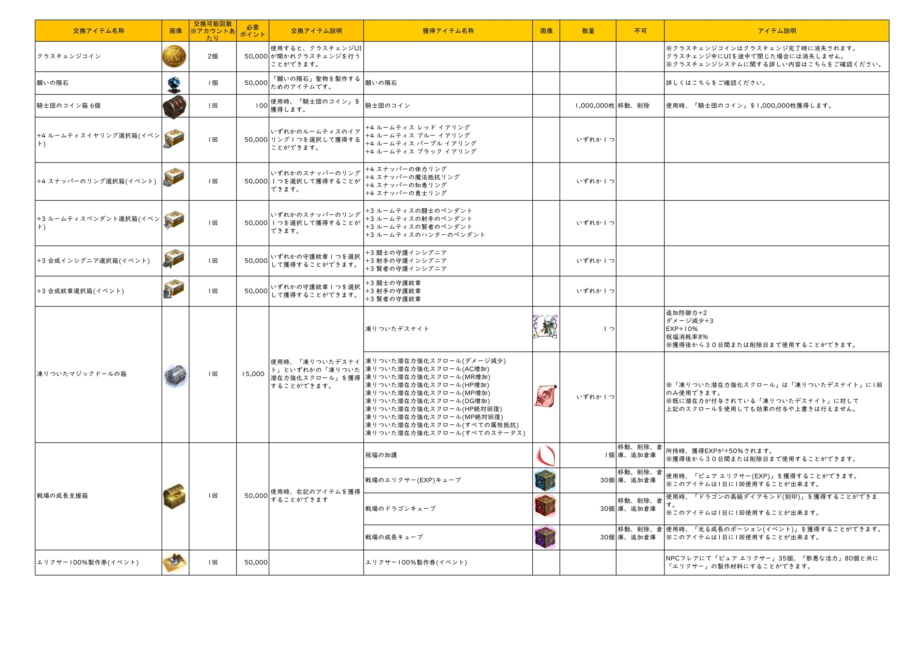
- シグネチャーポイント獲得コンテンツ(画像)
-
更新 2025年09月01日
Skills：棲息場所と階層を集約▼
モンスター毎に棲息場所を集約、生息場所毎に階層を集約
skill(スキル一覧表)
- モンスター毎に棲息場所を集約、生息場所毎に階層を集約従来は「ダークエルフ(アデン大陸)、ダークエルフ(暗黒竜の傷跡)」であったものを「ダークエルフ〈アデン大陸、暗黒竜の傷跡〉」のように同じモンスター毎に集約した。
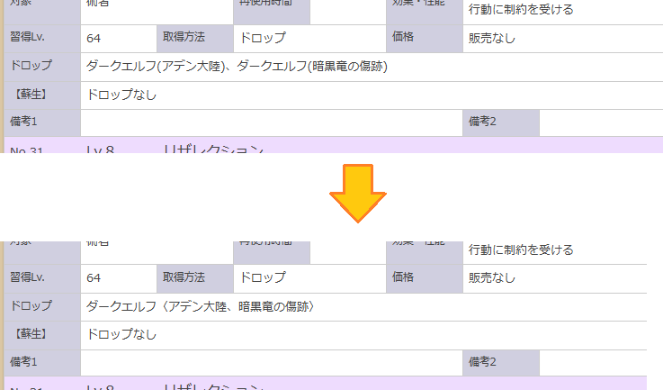
- また「ケルベロス(メインランドのダンジョン4階)、ケルベロス(メインランドのダンジョン5階)」であったものを「ケルベロス〈メインランドのダンジョン4階、5階〉」のように同じ狩り場の階層を集約した。
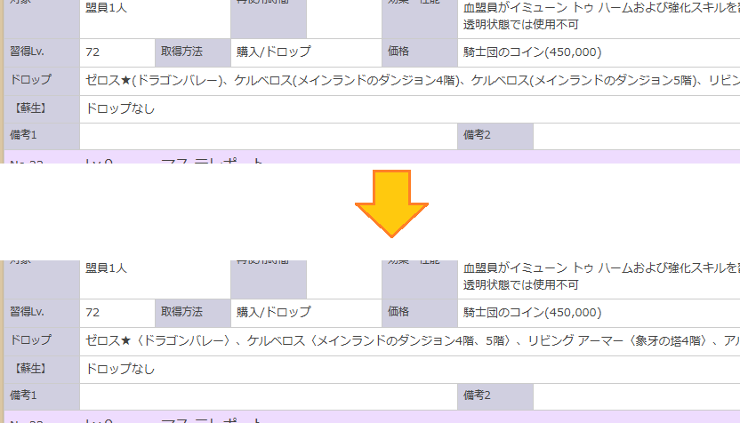
- モンスター毎に棲息場所を集約、生息場所毎に階層を集約従来は「ダークエルフ(アデン大陸)、ダークエルフ(暗黒竜の傷跡)」であったものを「ダークエルフ〈アデン大陸、暗黒竜の傷跡〉」のように同じモンスター毎に集約した。
-
更新 2025年08月29日
Drops：棲息場所と階層を集約▼
モンスター毎に棲息場所を集約、生息場所毎に階層を集約
Drops(Item2Monsterリスト)
- モンスター毎に棲息場所を集約、生息場所毎に階層を集約従来は「悪魔王のアックス：デーモン ゴーレム(隠された象牙の塔)、デーモン ゴーレム(隠された象牙の塔Boost)、デーモン ゴーレム(象牙の塔6階)、デーモン ゴーレム(象牙の塔7階)」であったものを「悪魔王のアックス ：デーモン ゴーレム〈隠された象牙の塔、隠された象牙の塔Boost、象牙の塔6階、7階〉」のように同じモンスター毎に集約した。
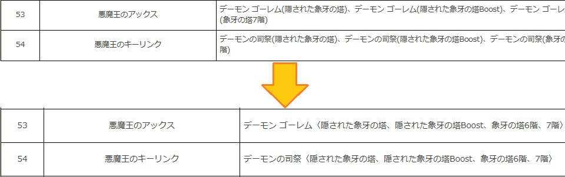
- また「地竜のスケルトン ガード(ドラゴンバレー ダンジョン4階)、地竜のスケルトン ガード(ドラゴンバレー ダンジョン5階)、地竜のスケルトン ガード(ドラゴンバレー ダンジョン6階)」であったものを「地竜のスケルトン ガード〈ドラゴンバレー ダンジョン4階、5階、6階〉」のように同じ狩り場の階層を集約した。
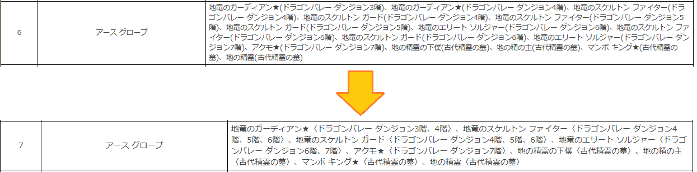
- モンスター毎に棲息場所を集約、生息場所毎に階層を集約従来は「悪魔王のアックス：デーモン ゴーレム(隠された象牙の塔)、デーモン ゴーレム(隠された象牙の塔Boost)、デーモン ゴーレム(象牙の塔6階)、デーモン ゴーレム(象牙の塔7階)」であったものを「悪魔王のアックス ：デーモン ゴーレム〈隠された象牙の塔、隠された象牙の塔Boost、象牙の塔6階、7階〉」のように同じモンスター毎に集約した。
-
更新 2025年08月27日
Monsters：htmlとデータtsv分離。追記▼
マスターエクセルのデータをHTML直接記述からTSVファイル読み込みに変更しました。
モンスター一覧表
- 初期表示はtableがblankになりました。テキストファイル読み込みの[表示]ボタンをクリックしてください。
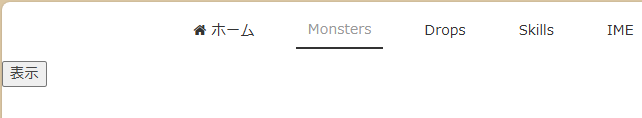
クリック後表示されるtableはソートとフィルター機能は従来と同様です。 - ドロップの一部修正
- ライカンスロープ：○武器強化スクロール×防具強化スクロール
- 亡者の看守：高級スキル選択箱、高級蘇生スキル選択箱追加
- ブラックナイト チーフ：技術書(アブソルート ブレイド：プリズン)、技術書(アブソルート ブレイド：プリズン)(蘇生)、高級スキル選択箱、高級蘇生スキル選択箱追加
- 記事欄の追記。出現場所と周期、アップデート付記
- アクモ ボス(★)：ドラゴンバレー ダンジョン7階＠6時間
- イフリート ボス(★)：火竜の棲処＠8時間
- オルクス ボス(★)：オークの森＠4時間
- カーツ ボス(★)：メインランド フィールド＠8時間
- カスパー ボス(★)：メインランドのダンジョン3階、4階＠6時間
- グレート ブラック エルダー ボス(★)：ドラゴンバレーフィールド＠毎日22時～23時
- サンドワーム ボス(★)：砂漠＠金曜日・土曜日21時
- ジャイアントドレイク ボス(★)：ドラゴンバレーフィールド＠12時間
- セマ ボス(★)：メインランドのダンジョン3階、4階＠6時間
- ゼロス ボス(★)：ドラゴンバレーフィールド＠12時間
- デーモン ボス(★)：象牙の塔7階＠4時間
- デスナイト ボス(★)：メインランドのダンジョン7階＠12時間
- デスナイト ボス(★)：2段階(マント)、メインランドのダンジョン7階＠12時間
- デスナイト ボス(★)：2段階(騎乗)、メインランドのダンジョン7階＠12時間
- ドッペルゲンガー ボス ボス(★)：鏡の森＠8時間
- ネクロマンサー ボス(★)：ドラゴンバレーフィールド＠6時間
- バルタザール ボス(★)：メインランドのダンジョン3階、4階＠6時間
- ビッグフット マーヨ ボス(★)：オーレン雪山＠8時間
- フェニックス ボス(★)：火竜の棲処＠12時間
- ブラックナイト チーフ ボス(★)(アデン大陸)：「騎士道」Up＝アブソルート ブレイド：プリズン、亡者の墓・ケント フィールド＠6時間
- ブラックナイト チーフ ボス(★)(亡者の墓)：「騎士道」Up＝アブソルート ブレイド：プリズン、亡者の墓・ケント フィールド＠6時間
- マイノ シャーマン ボス(★)：風竜の棲処＠8時間
- マンボ キング ボス(★)：古代精霊の墓＠6時間
- メルキオール ボス(★)：メインランドのダンジョン3階、4階＠6時間
- リカント ボス(★)：メインランド フィールド
- 看守長 タロス ボス(★)：ギラン監獄2階＠毎日21時
- 狂風のシャスキー ボス(★)：エルモア激戦地＠8時間
- 疾風のシャスキー ボス(★)：エルモア激戦地＠8時間
- 精霊監視者 ボス(★)：古代精霊の墓＠4時間
- 亡者の看守 ボス(★)：死の廃墟＠6時間
- 初期表示はtableがblankになりました。テキストファイル読み込みの[表示]ボタンをクリックしてください。
-
更新 2025年08月20日
Monsters：絞り込み機能強化▼
フィルターボタンのダイアログに最小値と最大値のBOXを追加しました。
モンスター一覧表
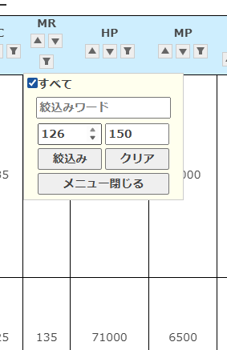
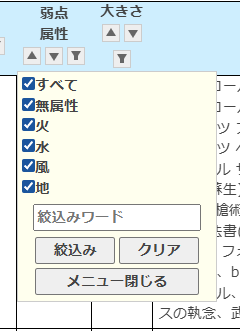
「Lv.」「AC」「MR」「HP」「MP」の各項目に最小値と最大値の入力欄を追加しました。
一方しか入力がない場合はそれ以上・それ未満を表示します。
なお、両方の入力がある場合はその範囲内のモンスターを表示します。
「狩り場リスト」「弱点属性」「大きさ」にはチェックボックスリストがあります。
-
更新 2025年08月05日
Monsters/Drops/Skills：スキル箱化対応▼
「騎士道」アップデート 2024.11.20. 09:55 一部対応モンスター一覧表
一部スキルを削除しスキル選択箱を登録 (＊下記[]のモンスターは未収録・狩り場図鑑ベース)- 一部のモンスターがドロップする唯一～高級等級の魔法書(蘇生含む)を削除しました。
- [アステリオス]、カヘル ヤヒ、[抑制したハルパス]、[ハルパス]
- 支配の塔各階層ボスモンスター11種(覚醒ボス含む)、傲慢の塔各階層ボスモンスター11種
- [ラザルス]、ヴァラカス、パプリオン、リンドビオル、アンタラス、[エルシャベ]、[クイーン センチュリオン]
- 等級別の魔法書(スキル)選択箱をドロップするモンスターを追加しました。
- 唯一スキル選択箱 [アステリオス3段階]、カヘル ヤヒ、[ハルパス]、[覚醒したデス グリムリーパー]
- 唯一蘇生スキル選択箱 [アステリオス3段階]、カヘル ヤヒ、[ハルパス]、[覚醒したデス グリムリーパー]
- 神話スキル選択箱 [アステリオス2/3段階]、カヘル ヤヒ、[ハルパス]、デス グリムリーパー(支配の塔)、[覚醒したデス グリムリーパー]、ヴァラカス、パプリオン、リンドビオル、アンタラス、憤怒のバルログ
- 神話蘇生スキル選択箱 [ハルパス]、デス グリムリーパー(支配の塔)、[覚醒したデス グリムリーパー]、ヴァラカス、パプリオン、リンドビオル、アンタラス、憤怒のバルログ
- 伝説のスキル選択箱 [アステリオス1/2/3段階]、カヘル ヤヒ、[ハルパス]、デス グリムリーパー、支配の塔各階層覚醒ボスモンスター11種、[エルシャベ]、憤怒のバルログ、[ラザルス]、ヴァラカス、パプリオン、リンドビオル、アンタラス
- 伝説蘇生スキル選択箱 [ハルパス]、支配の塔各階層ボスモンスター11種(覚醒ボス含む)、憤怒のバルログ、[ラザルス]、ヴァラカス、パプリオン、リンドビオル、アンタラス
- 英雄スキル選択箱 [アステリオス1/2/3段階]、カヘル ヤヒ、[ハルパス]、支配の塔各階層ボスモンスター11種(覚醒ボス含む)、憤怒のバルログ、ヴァラカス、パプリオン、リンドビオル、アンタラス、[ラザルス]、デス グリムリーパー(傲慢の塔最上階)、[エルシャベ]
- 英雄蘇生スキル選択箱 [ハルパス]、支配の塔各階層ボスモンスター11種(覚醒ボス含む)、憤怒のバルログ、ヴァラカス、パプリオン、リンドビオル、アンタラス、傲慢の塔各階層ボスモンスター11種、[ラザルス]、[クイーン センチュリオン]
- 希少スキル選択箱 [アステリオス1/2/3段階]、カヘル ヤヒ、[抑制したハルパス]、支配の塔各階層ボスモンスター11種(覚醒ボス含む)、ヴァラカス、パプリオン、リンドビオル、アンタラス、傲慢の塔各階層ボスモンスター11種、[ラザルス]
- 希少蘇生スキル選択箱 [抑制したハルパス]、支配の塔各階層ボスモンスター11種(覚醒ボス含む)、ヴァラカス、パプリオン、リンドビオル、アンタラス、傲慢の塔各階層ボスモンスター11種、[ラザルス]
- 高級スキル選択箱 [アステリオス1/2/3段階]、カヘル ヤヒ、[抑制したハルパス]、デス グリムリーパー(支配の塔)、[覚醒したデス グリムリーパー]、傲慢の塔各階層ボスモンスター11種
- 高級蘇生スキル選択箱 [抑制したハルパス]、デス グリムリーパー(支配の塔)、[覚醒したデス グリムリーパー]、傲慢の塔各階層ボスモンスター11種
ドロップ一覧表
一部スキルを削除しスキル選択箱を登録 (＊上記[]のモンスターは未収録・狩り場図鑑ベース)スキル一覧表
スキル選択箱以外の従来ドロップとスキル選択箱を展開したスキルアイテムを統合。
スキル使用条件：装備を追加 - 一部のモンスターがドロップする唯一～高級等級の魔法書(蘇生含む)を削除しました。
-
更新 2025年07月10日
Skills：追加・ページ体裁調整▼
スキル一覧表を追加
スキル一覧表ドロップとチュートリアルクエストNPCから購入などスキルの入手方法の表を作成。- Skillと入手方法の詠唱コストや効果・能力などをブロックで表示
- 表の概要
- スキルテーブルTSV本体
- skill_domain_identification：通し番号やスキル名称
- skill_domain_eligible_character：習得クラスとエルフ属性
- skill_domain_tendency：アクティブ/パッシブ、性向など
- skill_domain_resource：詠唱コスト消費HPMPと材料・触媒
- skill_domain_effect：スキルの効果持続時間、対象、効果・性能など
- skill_domain_acquisition：習得条件。習得レベル、取得方法、NPC価格
- skill_domain_dropmob：ドロップモンスター(レギュラー・蘇生)
- skill_domain_notes：備考
- 習得レベルやドロップモンスターに未収載があります。
覚えていないスキルはスキルウィンドウの説明のまま。
持っていないスキルは魔法書や書板などアイテム説明に書いてある情報などが未収載
- 折りたたみ表示・クラス表示ボタン
- 初期表示は全件折りたたみ
- クラス名ボタンをクリックするとそのクラスのみを表示
- 完全一致はクラス固有スキル、部分一致は共通一般魔法を含めたスキルを表示
ページの体裁調整
ページのリンクの追加。スタイルの変更。 - Skillと入手方法の詠唱コストや効果・能力などをブロックで表示
-
更新 2024年11月21日
漢字辞書：辞書を更新。ページの体裁調整▼
漢字変換辞書を更新
リネージュリマスターItemMonster辞書2024(ATOK)の更新
リネージュリマスターItemMonster辞書2024(IME)の更新
ページの体裁調整
辞書更新履歴をそれぞれの辞書ページに移動 CSS、アイコンなどの調整 -
更新 2024年11月13日
DropListを公開▼
MonsterListのアイテムからの逆引き
- DropItemとMonsterの2列
- Drop：アイテム名の辞書よみで並んでいます
- Monster：モンスター名（生息地）です。「★」はボスです。
- 表示順など
- 初期表示は「b-」「c-」「(蘇生)」「魔法書(」などの接頭語や接尾語を除いた名称で並べています。
例：「精霊の水晶(ハリケーン)」は【せいれいのすいしょう～】ではなく【はりけーん】の場所に並んでいます。 - 「－ドロップなし」「アデナ」も入っています。
- 一つのアイテムに名前が同じモンスターが含まれることがあります。
- MonsterListと同じようにフィルターが使えます。「フェンサーの書」を指定してスキルだけを表示したりできます。
- 初期表示は「b-」「c-」「(蘇生)」「魔法書(」などの接頭語や接尾語を除いた名称で並べています。
- DropItemとMonsterの2列
-
更新 2024年11月11日
漢字辞書：辞書を更新▼
リネージュリマスターItemMonster辞書2024(ATOK)の更新
リネージュリマスターItemMonster辞書2024(IME)の更新
-
更新 2024年10月30日
モンスターリスト/漢字辞書：辞書を公開▼
モンスターリスト
狩場図鑑を入力していた資料を一覧できるようにしたものです漢字変換辞書テキスト
狩り場図鑑の入力中正しい名称が面倒になってきたので副産物のIMEとATOKの辞書も公開。
略語やゲーム用語、顔文字は収録していません。狩場図鑑の「場所」「モンスター名」「ドロップアイテム名」を収録しています。